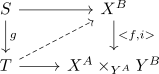
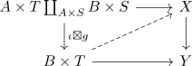

inner hom of a monomorphism and left fibration
Proposition
Let $f: X \rightarrow Y$ be a left fibration and $\iota: A \rightarrow B$ a monomorphism Then
\begin{align*}
<f,\iota>: \underline{\mathrm{Hom}}(B,X) \rightarrow \underline{\mathrm{Hom}}(A,X) \times_{\underline{\mathrm{Hom}}(A,Y)} \underline{\mathrm{Hom}}(B,Y)
\end{align*}
is also a left fibration
Proof
Let $g: S \rightarrow T$ be a left anodyne map Then using the bijection between pushout / pullback diagrams for adjoints a lift

is equivalent to

By boxtensor as left anodyne and component as left anodyne $\iota \boxtimes g$ is a left anodyne, hence there exists a lift